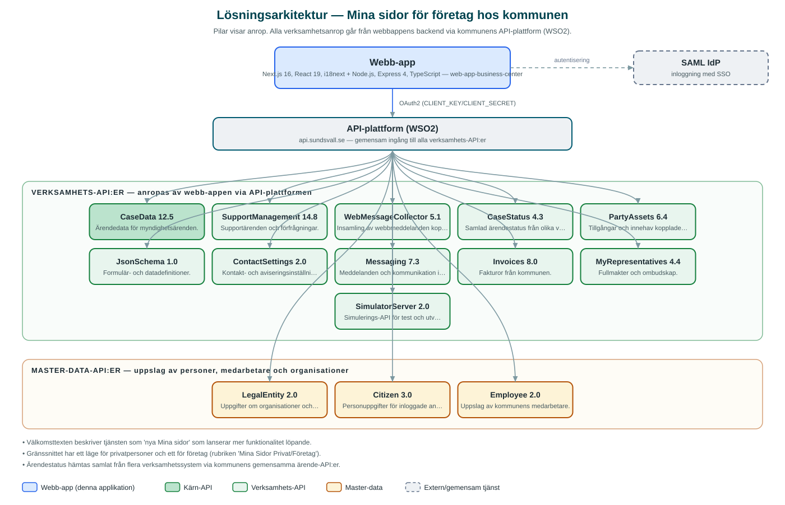

Mina sidor för företag hos kommunen
Mina sidor där företag och företrädare ser och följer sina ärenden hos Sundsvalls kommun samt tar del av beslut, dokument och fakturor.
Om applikationen
Tjänsten ger företag en samlad bild av sina kontakter med kommunen. Efter inloggning väljer användaren vilken organisation den företräder och får sedan en översikt över pågående och avslutade ärenden, nyheter samt genvägar till självservice.
Under respektive flik kan användaren se ärendestatus, ta del av beslut och tillhörande dokument, se fakturor från kommunen och hantera sina profiluppgifter och kontaktvägar. Fullmaktshantering gör att ombud kan agera för organisationens räkning.
Gränssnittet är byggt för både privatpersoner och företag ('Mina Sidor Privat/Företag') med ett läge per målgrupp, och beskrivs som en tjänst som utökas löpande med ny funktionalitet.
Det här stödjer applikationen
- Ärendeöversikt – Pågående och avslutade ärenden hos kommunen med aktuell status.
- Beslut och dokument – Tillgång till beslut och handlingar kopplade till organisationens ärenden.
- Fakturor – Samlad vy över organisationens fakturor från kommunen.
- Val av organisation – Företrädare med fullmakt väljer vilken organisation de agerar för.
- Profil och kontaktvägar – Hantering av kontaktuppgifter och aviseringsinställningar.
Teknisk dokumentation
Nedan beskrivs hur applikationen är uppbyggd, vilka API:er den använder och vad som krävs för att driftsätta den. Informationen är härledd ur källkoden och dess konfiguration på GitHub.
Arkitektur

Applikationen består av en webbaserad frontend (Next.js 16, React 19, i18next) och en backend (Node.js, Express 4, TypeScript) som utvecklas i samma kodbas. Verksamhetsanrop går via kommunens gemensamma API-plattform (WSO2) – frontend pratar aldrig direkt med underliggande system. Inloggning: SAML (SSO); inloggningsflödet är anpassat för BankID-baserad identifiering. Övriga integrationer som förekommer i koden: SAML IdP.
Teknikstack
- Frontend: Next.js 16, React 19, i18next
- Backend: Node.js, Express 4, TypeScript
- Test: Jest och Cypress (frontend), Vitest (backend)
API-beroenden
Applikationen konsumerar följande API:er via kommunens API-plattform. Versionerna är hämtade ur källkodens API-konfiguration.
| API | Version | Användning |
|---|---|---|
| CaseData | 12.5 | Ärendedata för myndighetsärenden. |
| SupportManagement | 14.8 | Supportärenden och förfrågningar. |
| WebMessageCollector | 5.1 | Insamling av webbmeddelanden kopplade till ärenden. |
| CaseStatus | 4.3 | Samlad ärendestatus från olika verksamhetssystem. |
| PartyAssets | 6.4 | Tillgångar och innehav kopplade till en part. |
| JsonSchema | 1.0 | Formulär- och datadefinitioner. |
| ContactSettings | 2.0 | Kontakt- och aviseringsinställningar. |
| Messaging | 7.3 | Meddelanden och kommunikation i ärenden. |
| Invoices | 8.0 | Fakturor från kommunen. |
| MyRepresentatives | 4.4 | Fullmakter och ombudskap. |
| SimulatorServer | 2.0 | Simulerings-API för test och utveckling. |
| LegalEntity | 2.0 | Uppgifter om organisationer och juridiska personer. |
| Citizen | 3.0 | Personuppgifter för inloggade användare. |
| Employee | 2.0 | Uppslag av kommunens medarbetare. |
Konfiguration och driftsättning
- Miljöfiler: frontend/.env-example och backend/.env.example.local
- CLIENT_KEY och CLIENT_SECRET mot kommunens API-plattform (WSO2)
- SAML-inställningar med IdP-adress och certifikat
- API-listan i backend/src/config/api-config.ts är enda sanningskälla för API-prenumerationer
Noterbart ur källkoden
- Välkomsttexten beskriver tjänsten som 'nya Mina sidor' som lanserar mer funktionalitet löpande.
- Gränssnittet har ett läge för privatpersoner och ett för företag (rubriken 'Mina Sidor Privat/Företag').
- Ärendestatus hämtas samlat från flera verksamhetssystem via kommunens gemensamma ärende-API:er.
Källkod
Källkoden är öppen och finns hos Sundsvalls kommun på GitHub. I källkodsförrådet finns även instruktioner för att klona, konfigurera och starta applikationen i egen miljö.